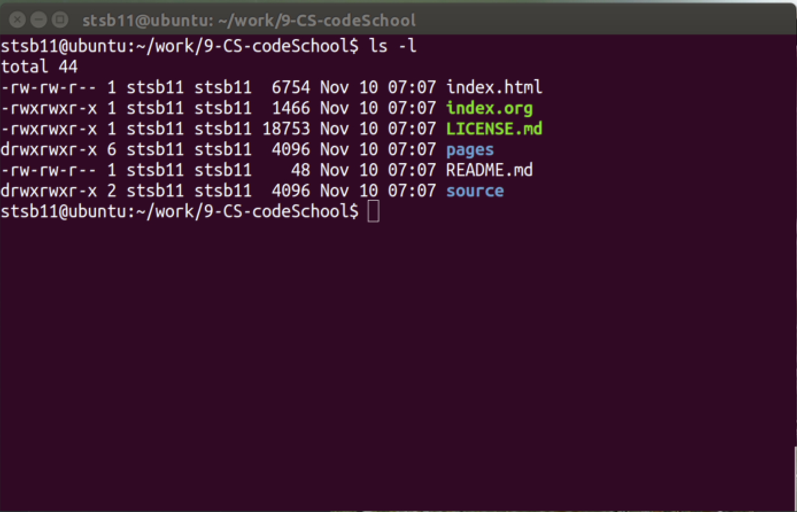
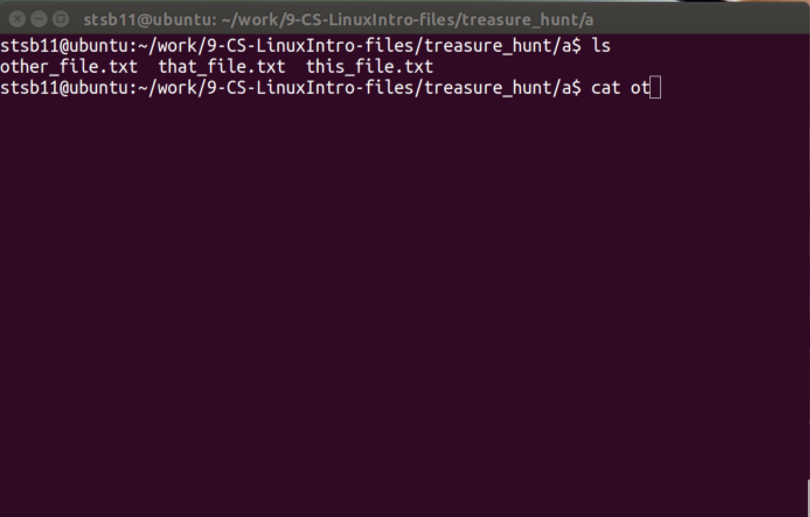

Introduction to Linux
Introduction
Try It
- To get the most out of Linux, you'll want to learn to use the command line to get things done. Linux is based around an operating system called UNIX that was first devised and written in 1969. Computers weren't really used with mice, touch screens or graphics back then. Many used line printers to produce their output rather than a monitor; thankfully, things have moved on.
- Many of the commands you'll learn are unchanged since the original UNIX release. Depite these commands possibly being older than your parents, they are used daily on the vast majority of the World's most powerful computers.
- In this lesson, we'll learn to navigate around your files and look at what's in them.
- We'll use this superb emulator by Fabrice Bellard…
- Or…
- Once the session has booted up, type:
cd /home cp -R * /tmp/ cd /tmp/treasure_hunt
- What these instructions do will become apparent as you work through this topic.
- NOTE: If you're working through this lesson using a Linux VM (your teacher will tell you), you will need to follow this set of instructions instead.
Try It
- We're going on a treasure hunt.
- In the treasure directory that you're currently in, there are more directories and some files within them.
- Many of these files contain jokes. One of them contains a secret code that you can use to collect your silver badge for this lesson.
- You'll need to learn to use three commands to complete this exercise.
Present Working Directory
- You'll need to know where you are in your filesystem.
pwd
- Present Working Directory. Outputs the current directory you're in.
- If you've followed the above instructions and try this, you should see that you're currently working in…
/tmp/treasure_hunt
Listing directory contents
- Just like when you use 'My Computer' in Windows to browse your documents and files, it's useful to see what files you have in different directories.
ls
- LiSt. Shows a list of the files and directories in the current directory.
- Pro tip: You can get a more detailed list if you use
ls -linstead.

- In the shot above, you can see the time and date when each file was last modified to the left of each file name.
- Entries which are directories (like pages and source in my example) have the letter 'd' on the far left-hand side of the column. Some Linux systems will also change the colour of the directory names for you, like in the image above.
- The size of the file in bytes is shown to the left of the month the file was last modified.
- The username and group of the person who created the file is shown here too.
- Pro tip: Tap the up and down arrows on the keyboard to browse your previous commands.
Change Directory
- Sometimes, we'll want to work in a different directory (or folder, as you'd say in Windows)
cd NAME_OF_DIRECTORY
- Change Directory to somewhere else. You could type
cd afor instance to move into directory a. - At the moment, you should be able to see four directories, imaginatively called
a,b,candd. Let's Change Directory into a… - Type:
cd a - Now let's LiSt the files in this directory. Type:
ls - There are three text files in here. We'll have a look inside them in a moment.
- For now though, we'll need to get back to the previous directory. This is done as follows:
cd ..- In Linux type Operating Systems,
..means 'back one level'. You can use a few of them at a time to navigate around more quickly. E.g.cd ../..to drop back two directory levels, orcd ../bto drop back a level, then change into thebdirectory if you were already working insidea. - Task: Use
pwdto get your bearings, then navigate into theadirectory once more.
Concatenate
- This command is actually short for conCATenate, which means to add one thing to the end of another. While it can do this, its more commonly used by Linux users to quickly see the contents of files.
cat FILENAME
- Assuming you're in the
adirectory, typelsto see whats in there.

- Let's see what's inside the
otherfile.txtdocument. Typecat otlike in the screenshot above. - Linux users don't like to type too much - as there are no other files in here that start with
ot, you can hit thetabkey to auto-complete (you'll want to do this a lot once you get used to it), then hit enter to run the command. - The contents of the file will now be displayed.
Badge It
- Attempt the badge tasks below. If you're not sure how to navigate the filesystem, the video tutorial below goes over it again, with examples, to help you achieve the badge.
- Silver: Explore the
treasure_huntdirectory and its sub-directories, andcatthe different files until you find the secret password. Create a text file and save it, using the password as your file name. Then upload this for the silver badge. - Gold: In the file you created for the silver badge, add a short explanation of what
ls,cd,catandpwddo in a Linux terminal. - Platinum: Make a new directory called
LinuxChampinside the/tmp/directory, and move one of the joke files from the earlier directory into it. Screenshot the results of thepwdandlscommand from the terminal as evidence you've completed the task.